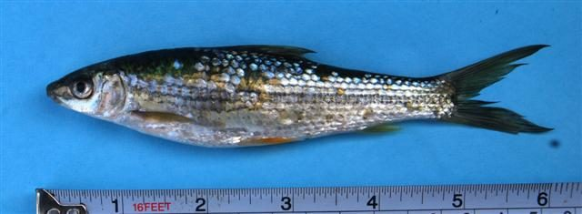

रेबा कार्प मछलीReba Carp
Cirrhinus reba · Cyprinidae · FSH-0051

- Scientific name वैज्ञानिक नाम
- Cirrhinus reba (Hamilton, 1822)
- Family कुल
- Cyprinidae
- Hindi हिंदी
- रेबा कार्प मछली
- Local names स्थानीय नाम
- reba carp, reba machhli, raik machhli, reba, rewah
- Status here यहाँ की स्थिति
- native
- Movement आवागमन
- Resident, here all year
- Known from कहाँ दर्ज
- Others have published records from the wider Awadh–Purvanchal plain, none yet from Basti–Ayodhya अवध–पूर्वांचल से दूसरों के प्रकाशित अभिलेख, बस्ती–अयोध्या से अभी नहीं
- IUCN IUCN
- not evaluated
- Review समीक्षा
- not yet reviewed
When to look कब देखें
Present all year. साल भर मौजूद।
Uses and possibilities उपयोग और संभावनाएँ
Drawn from the documented uses in the profile below, where each is labelled traditional, current or a research lead. All uses →
Tell it apart from इनसे अलग पहचानें
रेबा कार्प मछली / Reba Carp
Cirrhinus reba (Hamilton, 1822) — Cyprinidae
रेबा कार्प मछली — नदियों, बड़े तालाबों और बाढ़ के तालों में पाई जाने वाली एक मध्यम आकार की बहुत स्वादिष्ट और उपयोगी देसी कार्प (minor carp) मछली है। इसका शरीर लंबा, चिकना और चांदी जैसा चमकदार होता है, जिस पर तराशों की कतारों के साथ बारीक गहरी धारियाँ दिखाई देती हैं। इसका मुँह नीचे की तरफ होता है, जिससे यह तली की काई और कीचड़ में जमी सड़ी-गली वनस्पतियों को खाती है। यह ग्रामीण आहार में एक बहुत पौष्टिक और लोकप्रिय मछली है।
Quick Identification त्वरित पहचान
| Feature | Description |
|---|---|
| Size | Medium-sized cyprinid; reaches about 30 cm TL (Froese & Pauly 2025) |
| Body Shape | Elongate, slender, subcylindrical, with a gently arched back (Hamilton 1822) |
| Mouth & Snout | Snout slightly projecting; mouth inferior, transverse; upper lip fringed (Talwar & Jhingran 1991) |
| Barbels | A single pair of short rostral barbels; maxillary barbels absent (Talwar & Jhingran 1991) |
| Colour | Silvery-grey on the back, shining silver on the flanks with dark longitudinal lines (Talwar & Jhingran 1991) |
| Scales | Hexagonal appearance with dark edges, 35 to 38 in lateral line (Hamilton 1822) |
| Fins | Translucent to pale yellow; dorsal and caudal fins often with dark grey tips (Talwar & Jhingran 1991) |
Field tip: Look in flowing rivers and deep village tanks. A slender silvery carp with an inferior mouth, a single pair of tiny rostral barbels, and distinct dark hexagonal scale outlines forming subtle longitudinal lines along the body is the Reba Carp.
हिंदी: यह मध्यम आकार की लंबी मछली है जिसका रंग चांदी जैसा होता है। इसके तराशे षट्कोण जैसे दिखते हैं और शरीर पर हल्की धारियाँ बनती हैं। इसके मुंह पर केवल दो छोटी मूंछें होती हैं।
Morphology आकारिकी
Size as given by FishBase (Froese & Pauly 2025):
| Measurement | Range | Source |
|---|---|---|
| Maximum length | 30 cm TL | Froese & Pauly (2025), FishBase |
Adult description:
Cirrhinus reba has an elongate, streamlined body with a gently arched dorsal profile and a moderately rounded belly (Hamilton 1822). The head is moderate, conical, and slightly compressed, comprising about one-fifth of the overall length (Talwar & Jhingran 1991). The snout is slightly projecting beyond the mouth and is often studded with fine sensory pores (Hamilton 1822). The mouth is small, inferior, and transverse; the upper lip is distinctly fringed or crenulated, while the lower lip is thin and partially reflected (Talwar & Jhingran 1991). A single pair of short rostral barbels is present near the snout tip; maxillary barbels are completely lacking (Talwar & Jhingran 1991).
The dorsal fin originates in advance of the pelvic fins, carrying 2–3 unbranched and 8–9 branched rays, without a stiffened spine (Talwar & Jhingran 1991). The anal fin is short, containing 5 branched rays. The pectoral fins are pointed, and the caudal fin is deeply forked with equal pointed lobes (Hamilton 1822). The lateral line is complete and straight, with 35 to 38 scales (Talwar & Jhingran 1991).
Coloration is shining silvery-grey dorsally, fading to lustrous white on the abdomen (Talwar & Jhingran 1991). The cycloid scales possess dark margins that impart a distinct hexagonal pattern across the flanks, creating several subtle longitudinal bands in life (Hamilton 1822). The dorsal and caudal fins are dusky grey; pelvic and pectoral fins are pale translucent yellow, taking on orange tints during the breeding season (Talwar & Jhingran 1991).
हिंदी: इसका शरीर लगभग 30 सेमी तक लंबा, पतला और मजबूत होता है। मुंह नीचे की तरफ होता है जिसके ऊपरी होंठ पर बारीक कटाव होते हैं। मुंह के पास केवल दो छोटी मूंछें होती हैं।
Behaviour & Ecology व्यवहार और पारिस्थितिकी
The Reba Carp is an active benthopelagic fish inhabiting river channels, floodplains, reservoirs, and perennial ponds (Talwar & Jhingran 1991). It prefers flowing waters with sandy or muddy substrates rich in epilithic biofilms, diatoms, and decomposing plant detritus.
Schools of sub-adults and adults forage continuously along the bottom (Daniels 2002). Using their inferior mouths and crenulated lips, they browse on bottom silt, taking in mouthfuls of soft substrate to extract diatoms, decaying vegetation, and microscopic invertebrates while expelling mineral particles through their gill slits (Talwar & Jhingran 1991). During the high-water monsoon season, schools move out of main riverbeds like the Ghaghara and Kuwano into inundated floodplain wetlands (tals) to graze on newly flooded vegetation, returning to deep pools as floodwaters recede.
हिंदी: यह मछली पानी की तलहटी में रहना पसंद करती है। यह नीचे की मिट्टी और काई को खुरचकर खाती है और भोजन की तलाश में तलहटी पर झुंड बनाकर घूमती है।
Life Cycle / Phenology जीवन चक्र
Seasonal phenology in northern Indian alluvial waters across the agricultural year (Talwar & Jhingran 1991; Daniels 2002):
| Season / Month | Stage | Field Observation |
|---|---|---|
| June–July (Monsoon onset) | Upstream spawning run | Adults migrate to flooded grassy shallows and river banks (Talwar & Jhingran 1991) |
| July–August (Kharif peak) | Spawning | Egg deposition occurs in shallow flooded meadows (Daniels 2002) |
| September–November (Post-monsoon) | Juvenile recruitment | Fingerlings feed heavily on plankton and detritus in wetlands (Talwar & Jhingran 1991) |
| December–February (Rabi winter) | Deep pool retreat | Sub-adults congregate in deeper river sections and large tals |
| March–May (Summer / Zaid) | Active benthic feeding | Heavy grazing on benthic algae as water temperatures rise (Daniels 2002) |
Breeding takes place during the monsoon rains from June to August (Talwar & Jhingran 1991). Rising river levels and cooler water temperatures trigger spawning migrations into flooded marginal shallows. Spawning occurs over submerged grasses in clear, gently flowing water. Females release hundreds of non-adhesive, demersal eggs that settle on the substrate. The eggs hatch after a few days, and tiny larvae shelter among flooded grasses before joining open-water schools as the floods recede (Daniels 2002).
हिंदी: मानसून में पानी बढ़ने पर यह मछली नदी के उथले घास वाले किनारों पर जाकर अंडे देती है। कुछ दिनों में अंडों से बच्चे निकल आते हैं और वे तेजी से बढ़ते हैं।
Diet and Feeding Behaviour आहार
Cirrhinus reba is primarily a benthic herbivore and detritivore (Talwar & Jhingran 1991):
Natural diet components:
- Filamentous green algae, blue-green algae, and unicellular diatoms scraped from rocks, timber, and muddy substrates (Daniels 2002).
- Decaying aquatic plant fragments and organic detritus ingested from bottom silt (Talwar & Jhingran 1991).
- Benthic micro-invertebrates, including chironomid midge larvae, small worms, and ostracods.
- Microscopic planktonic algae and rotifers filtered during juvenile stages.
हिंदी: यह मुख्य रूप से शाकाहारी मछली है। यह पानी की तली में जमी काई, शैवाल, सड़े हुए पौधों के अंश और कीचड़ के सूक्ष्म कीड़े खाती है।
Predators / Natural Enemies शत्रु
Documented natural predators in northern Indian alluvial freshwater systems:
- Riverine predatory fishes: Large predators like Wallago attu (Striped Catfish), Channa marulius (Great Snakehead), and Chitala chitala (Clown Knifefish) actively hunt reba schools.
- Piscivorous birds: Herons, cormorants, and storks capture adults in shallow oxbow wetlands.
- Freshwater turtles and otters: Hunt schooling minor carps in perennial river pools.
- Water snakes: Prey on juveniles in weed-rich nursery shallows.
हिंदी: बोआल, सौर, चितल जैसी बड़ी शिकारी मछलियाँ, बगुले और उदबिलाव इस मछली का शिकार करते हैं।
Agricultural / Human Relevance कृषि प्रासंगिकता
Nutritional and commercial food value: The Reba Carp is one of the most valued minor carps across northern and eastern India. It is captured in substantial quantities by commercial and subsistence fishers using cast nets, gill nets, and shore seines. The flesh is tender, flavorful, and highly regarded by local consumers, providing vital animal protein, calcium, and essential fatty acids to rural families at an accessible market price.
Pond aquaculture role: Cirrhinus reba is widely cultured as an auxiliary species in composite fish culture ponds alongside major Indian carps (Catla, Rohu, Mrigal) because its smaller size and bottom-grazing habits fill empty ecological niches without competing aggressively with larger carps (Talwar & Jhingran 1991).
Traditional: A traditional staple food fish widely eaten across Awadh and eastern Uttar Pradesh.
Today: Sold fresh in village markets and urban fish bazaars; stocked in composite fish farming ponds.
Research direction (a lead, not a result): Assessing induced breeding protocols in rural hatcheries to supply reba fingerlings for seasonal village pond stocking.
हिंदी: यह एक बहुत स्वादिष्ट और पौष्टिक देसी मछली है जिसे बाजारों में खूब पसंद किया जाता है। इसे तालाबों में रोहू और कतला के साथ भी आसानी से पाला जा सकता है।
Expected Locally स्थानीय रूप से अपेक्षित
Not a field record. Written from published accounts for eastern Uttar Pradesh. No confirmed local sighting yet — if you have seen it, that is what the atlas needs.
अभी तक स्थानीय पुष्टि नहीं। यह विवरण प्रकाशित स्रोतों से है, किसी अवलोकन से नहीं।
The Reba Carp is expected across eastern Uttar Pradesh in perennial rivers, oxbow lakes (tals), reservoirs, and large canal systems. Look in river pools and connecting wetlands from August through January. GBIF holds published records from the wider Awadh–Purvanchal plain, none yet from Basti–Ayodhya. A voucher photograph showing the elongate silvery body, hexagonal scale patterns, and single pair of rostral barbels, submitted via the About page, would confirm the first local documentation for the project area.
Distribution वितरण
Global range: Widespread across South Asia, natively occurring in India, Pakistan, Nepal, and Bangladesh (Talwar & Jhingran 1991).
In India: Distributed throughout the Indus, Ganges, Brahmaputra, Mahanadi, Godavari, Krishna, and Cauvery river basins (Menon 1999).
In Uttar Pradesh: Recorded throughout the Ganges, Ghaghara, Rapti, Gomti, and Sarda river networks and major floodplain lakes.
In Basti district / eastern UP: Expected as a resident native species in the Ghaghara, Kuwano, and Ami river corridors and major oxbow wetlands.
हिंदी: यह भारत, पाकिस्तान, नेपाल और बांग्लादेश की प्रमुख नदियों में पाई जाती है। उत्तर प्रदेश में घाघरा और गंगा नदी प्रणालियों में यह व्यापक रूप से उपस्थित है।
Research Questions शोध प्रश्न
- How do monsoon discharge variations affect the timing and success of Cirrhinus reba spawning in the Kuwano basin? / कुआनो नदी में पानी के बहाव का इस मछली के अंडे देने पर क्या असर पड़ता है?
- What are the optimal stocking ratios for Cirrhinus reba in polyculture ponds with Labeo rohita and Cirrhinus mrigala?
- What is the impact of destructive fine-mesh mosquito net fishing on wild reba fingerling populations? / बारीक जालों से मछली पकड़ने का इस मछली के बच्चों पर क्या असर होता है?
- How does seasonal siltation in oxbow lakes alter benthic algal biofilm productivity for grazing carps?
- Can community-managed seasonal closures during the monsoon protect breeding reba stocks in floodplain wetlands?
Similar Species मिलती-जुलती प्रजातियाँ
| Species | How to tell apart | हिंदी | |
|---|---|---|---|
| Cirrhinus mrigala ([[mrigal\ | Mrigal]]) | Major carp growing much larger in adult size; mouth wider; lacks dark longitudinal stripes on scale rows | मृगल — बहुत बड़ी होती है, मुंह चौड़ा और शरीर पर धारियाँ नहीं होतीं |
| Labeo rohita ([[rohu\ | Rohu]]) | Body deeper with arched back; lips thick and heavily fringed; fins have reddish-orange tints | रोहू — पीठ अधिक उठी हुई, होंठ बहुत मोटे और पंख लालिमा लिए होते हैं |
| Labeo bata ([[bata\ | Bata]]) | Minor carp possessing 2–4 barbels; lower lip separated from isthmus by a deep groove | बाटा — दो से चार मूंछें होती हैं और निचले होंठ की बनावट अलग होती है |
Field rule: An elongate, streamlined silvery minor carp with an inferior mouth, a single pair of short rostral barbels, and dark hexagonal scale outlines forming subtle longitudinal lines, is Cirrhinus reba.
हिंदी: मृगल और रोहू बहुत बड़े आकार की मछलियाँ होती हैं, जबकि रेबा मध्यम आकार की पतली मछली होती है जिसके मुंह पर सिर्फ दो छोटी मूंछें होती हैं और तराशों पर हल्की धारियाँ दिखती हैं।
Taxonomy & Classification वर्गीकरण
Original description. Described by Francis Hamilton in 1822 as Cyprinus reba in An Account of the Fishes Found in the River Ganges and Its Branches, page 280. Type locality: Rivers and ponds of Bengal and Bihar.
Subspecies. Monotypic — no subspecies are recognized across its continental range.
Family and order placement. Order Cypriniformes, family Cyprinidae, subfamily Labeoninae. The genus Cirrhinus Oken, 1817, comprises Asian bottom-feeding carps.
Phylogenetic notes. Cirrhinus reba is distinguished from its congener Cirrhinus mrigala by its smaller adult size, narrower body depth, lower lateral line scale count, and presence of only rostral barbels (Talwar & Jhingran 1991).
IUCN status rationale. Not evaluated (NE) on the global IUCN Red List of Threatened Species. It maintains widespread, abundant wild and cultured populations across northern India.
हिंदी: इसका वैज्ञानिक नाम Cirrhinus reba है और यह Cyprinidae परिवार की Labeoninae उपपरिवार की सदस्य है। प्रकृति में इसका वास सुरक्षित है।
Photo Gallery फोटो गैलरी
No photos yet — add field photos to media/species/reba_carp/ and run node scripts/sync_photos.js.
Photos needed आवश्यक फोटो
- [ ] Lateral view of adult specimen showing silvery flanks and hexagonal scale markings (चांदी जैसे शरीर और तराशों की तस्वीर)
- [ ] Close-up of head showing the inferior mouth and single pair of rostral barbels (मुंह और दो छोटी मूंछों का दृश्य)
- [ ] Freshly collected specimen from a local river or fish market (ताजा पकड़ी गई मछली की तस्वीर)
- [ ] School of live fish swimming over a muddy bottom in an aquarium (पानी की तली में तैरता झुंड)
References संदर्भ
- Hamilton, F. (1822). An Account of the Fishes Found in the River Ganges and Its Branches. Archibald Constable and Company, Edinburgh, p. 280.
- Talwar, P. K. & Jhingran, A. G. (1991). Inland Fishes of India and Adjacent Territories, Vol. 1. Oxford & IBH Publishing Co., New Delhi, pp. 221–222.
- Menon, A. G. K. (1999). Check list - fresh water fishes of India. Records of the Zoological Survey of India, Occasional Paper No. 175, p. 89.
- Daniels, R. J. R. (2002). Freshwater Fishes of Peninsular India. Universities Press, Hyderabad, pp. 94–96.
- Froese, R. & Pauly, D. (Eds.) (2025). FishBase. World Wide Web electronic publication.
- GBIF Occurrence Data — Cirrhinus reba, India (2025).
Source file: species/fauna/fish/reba_carp.md